AI Therapist vs AI Financial Advisor: Who Do You Trust More?

I conducted research in the Caribbean Region and got some interesting answers...
Dive deeper into research, interviews, and insights from Emotion Encoded.
““If you invent a breakthrough in artificial intelligence, so machines can learn, that is worth 10 Microsofts.”
— Bill Gates
Dive deeper into research, interviews, and insights from Emotion Encoded.
Bill Gates
“If you invent a breakthrough in artificial intelligence, so machines can learn, that is worth 10 Microsofts.”
I conducted research in the Caribbean Region and got some interesting answers...
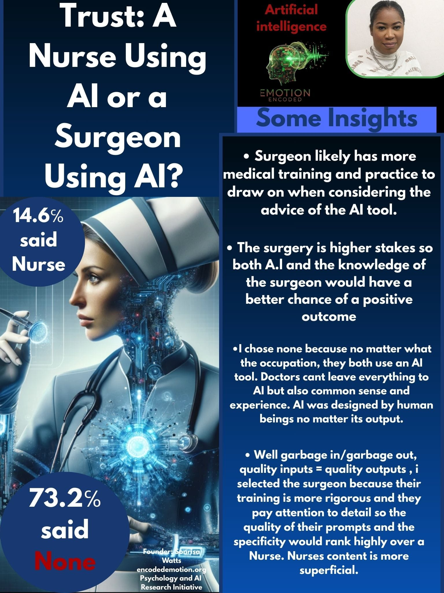
Emotion Encoded asked “Who would you trust more: a surgeon using an AI tool, or a nurse using an AI tool?” The results were far from unanimous. In our survey of 44 people.. 41 respondents gave these insights: the majority chose none of the above."
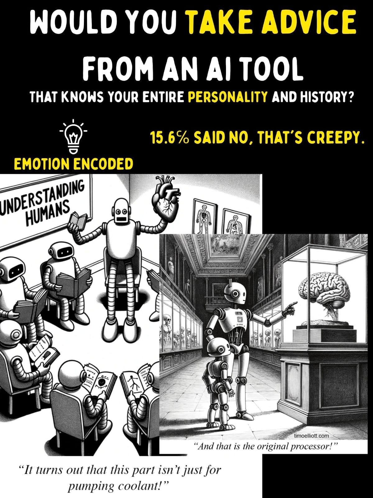
Emotion Encoded asked participants "Would you take advice from an AI if it knew your entire personality and history?" Majority said "Maybe". 15.6% said "No, that's creepy."

Emotion Encoded asked "What would you need to know about an AI tool in order to trust it?"
Some of the responses that the majority of participants chose were...

Insights from Dr. Owen on Artificial Intelligence integration into Education
Read More →
Interview with Dr. Aljay Pierre- Cofounder of Telehealth GoDocta
Read More →
Insights from Dr. Vineetha Binoy - Senior Consultant Oncologist
Read More →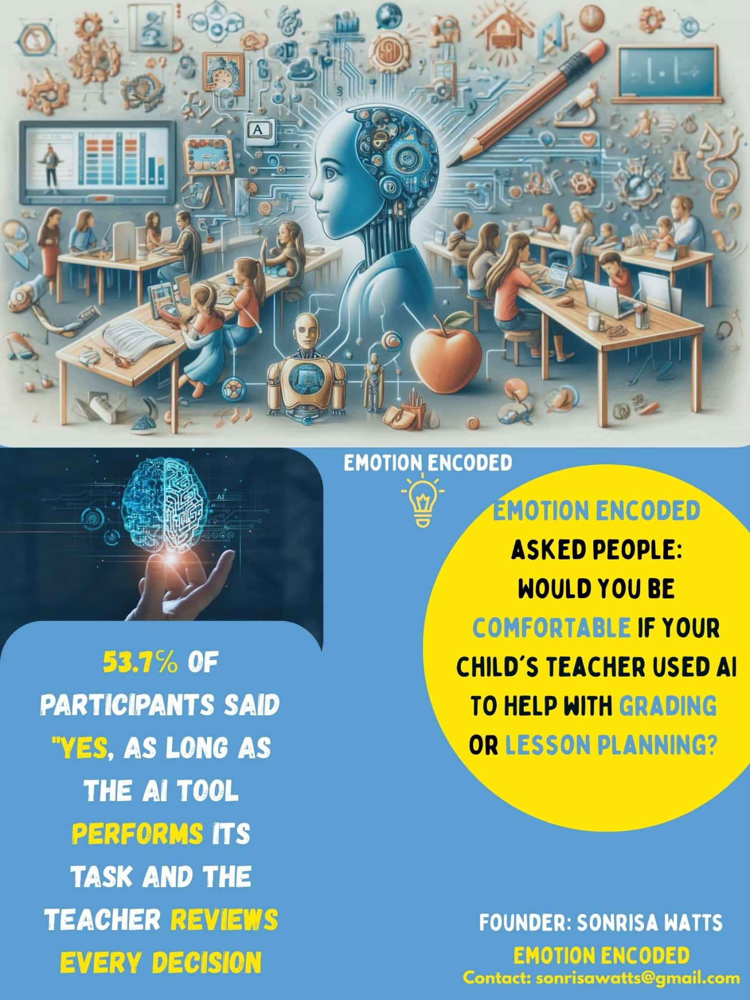
As part of my research initiative Emotion Encoded, I asked participants: “Would you be comfortable if your child’s teacher used AI to help with grading or lesson planning?” 53.7% said “yes, but only under conditions”; 26% said “no”; 11% said “yes” without conditions.
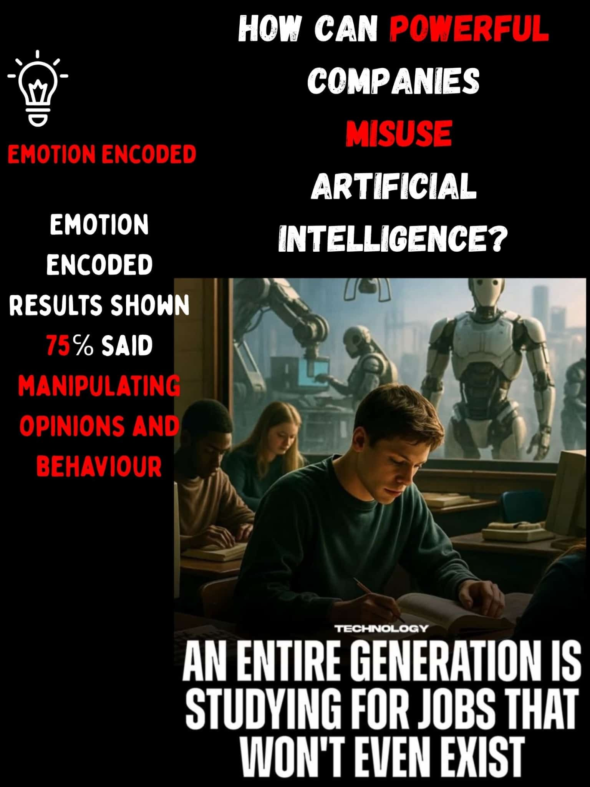
Insights into another part of the Emotion Encoded initiative...

When asked to choose between an AI jury or an AI prosecutor, the majority of respondents chose neither. Their responses reveal a deep-seated belief that human empathy is essential to the justice system.

Preview: A Conversation with Dr. Izben Williams on AI, Humanity, and the Mind
Read More →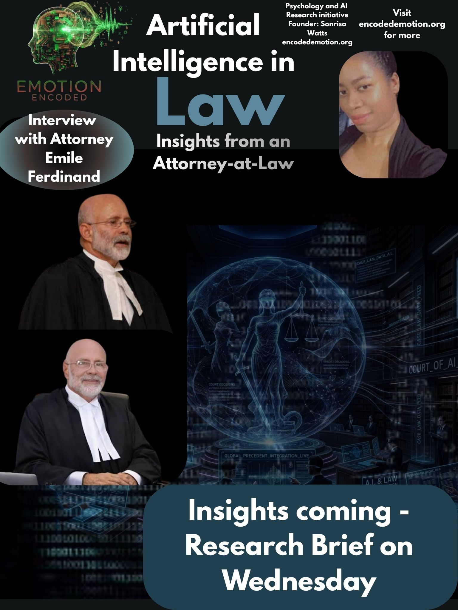
Preview: At Emotion Encoded- Senior Attorney-at-law Perspective of AI integration into Law.
Read More →
Dr.Higgins, a Bahamian Interventional Radiologist gives his perspective of Artificial Intelligence in Radiology
Read More →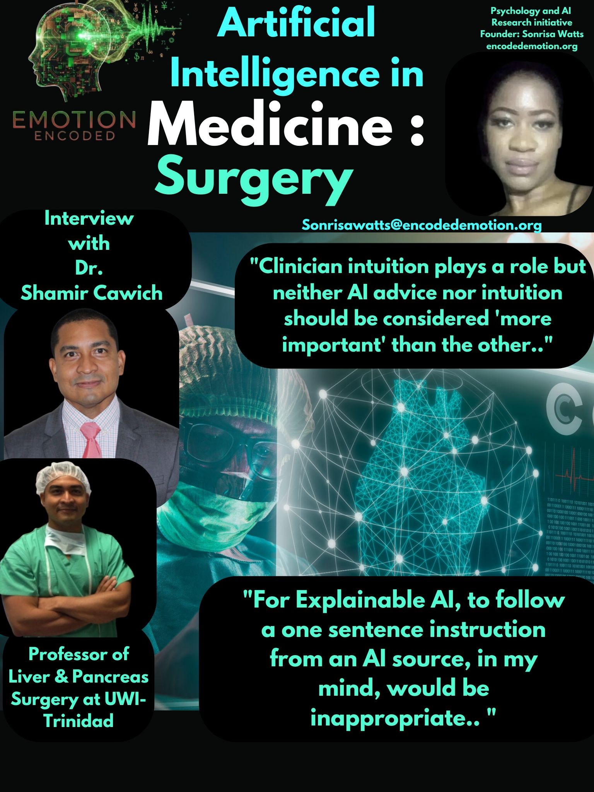
Featuring Dr Shamir Cawich - Dr. Shamir Cawich , Professor of Surgery at UWI Trinidad -
Read More →
Featuring Dr. Navi Muradali is the CEO and founder of Patient Connect and Former Mayor of San Fernando: Health Policy Expert
Read More →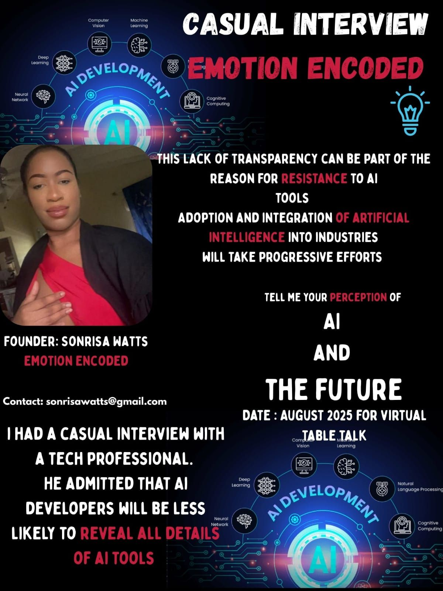
First Interview with Tech Specialist-
Read More →
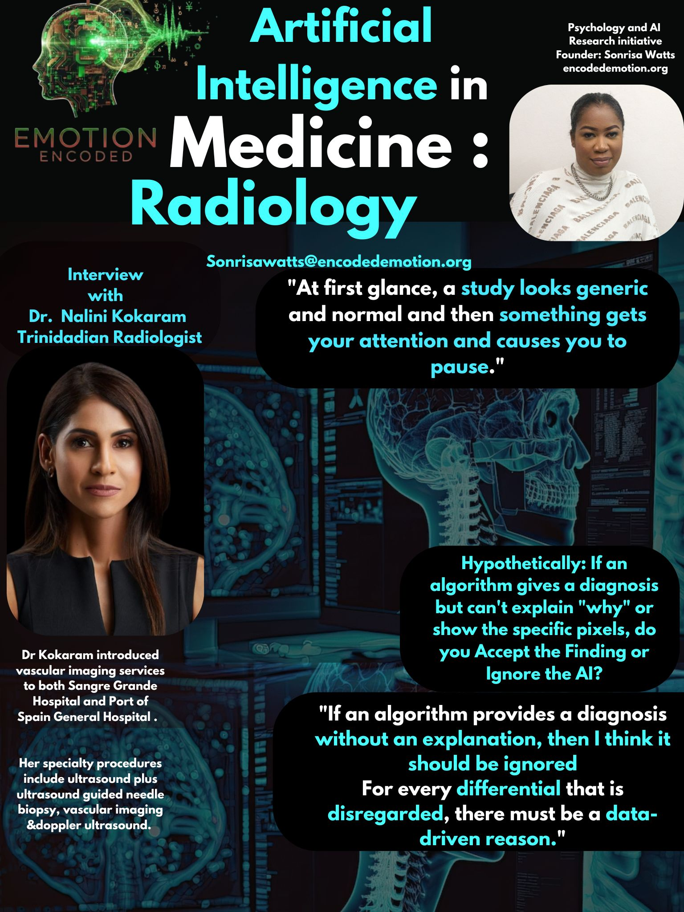
Insights from Dr. Nalini Kokaram Maharaj- Seasoned Trinidadian Radiologist- She served as the Head of Radiology at Sangre Grande Hospital and Port of Spain General Hospital (Chief of Staff) She introduced vascular imaging services to the public health sector and played a vital role in the National Organ Transplant Unit (NOTU).
Read More →
Decision-Making in Radiology using Artificial Intelligence - Perspective
Read More →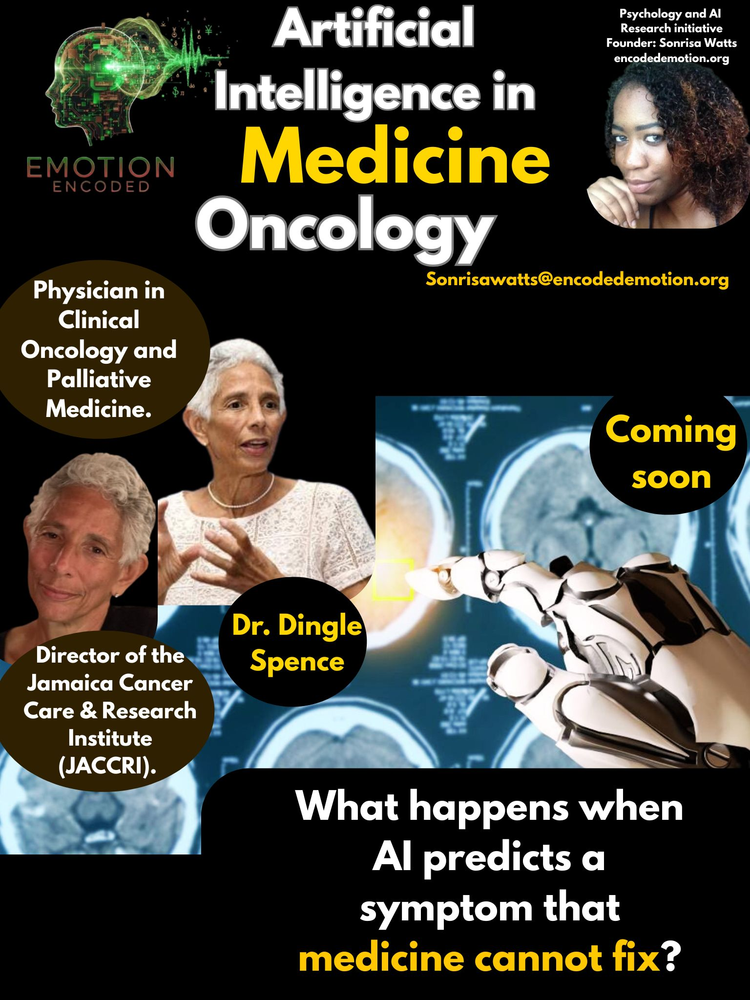
Insights from Dr. Dingle Spice- Co-Director and founder of the Jamaica Cancer Care and Research Institute (JACCRI). She is also the Senior Medical Officer at the Hope Institute Hospital in Jamaica and a leading advocate for cancer care and equity in the Caribbean.
Read More →
If AI can’t ‘understand’ emotions, why do we trust it with life-altering money decisions? My research suggests it’s not about capability! It’s about the perceived risk.
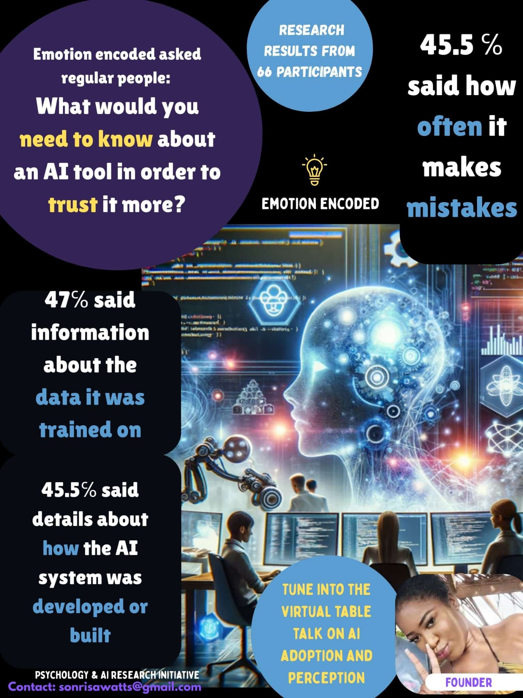
🤗St. Kitts & Nevis 🤗 What happens to trust when professionals rely on AI but don’t disclose it?

A Conversation with a Nevisian Clinical Psychologist and Founder of Respite
Read More →
Insights from a Seasoned Lawyer: The Reality of AI
Read More →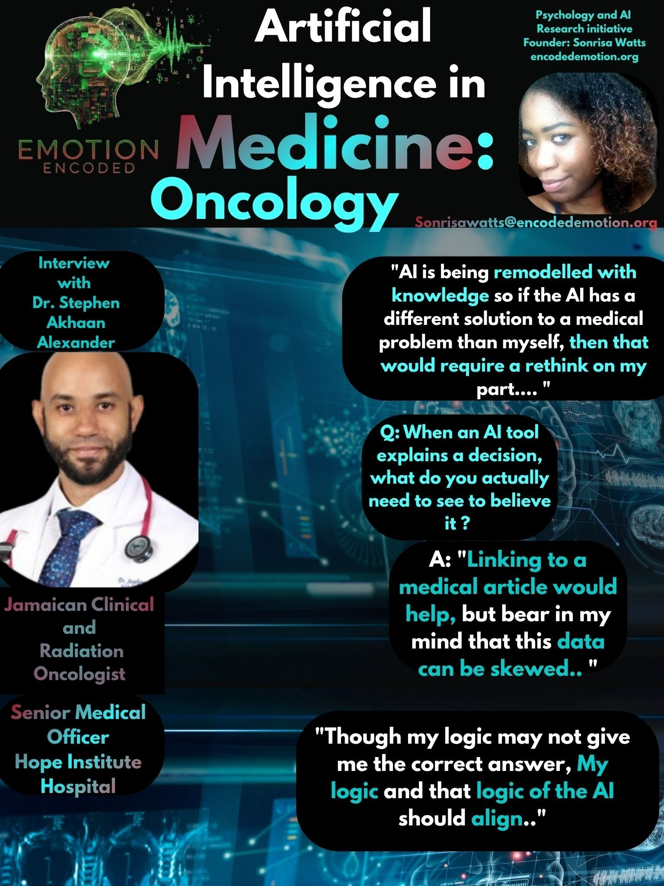
Insights from Jamaican Clinical and Radiation Oncologist- Dr. Stephen Akhaan Alexander, a Consultant Radiation and Clinical Oncology specialist. He serves as the Senior Medical Officer at Hope Institute Hospital and Consultant Oncologist at Ruthven Medical Centre in Kingston, Jamaica.
Read More →
Insights from Ms. Sasha Lloyd on the truth of AI!
Read More →

Insights from an Physician in Internal Medicine!
Read More →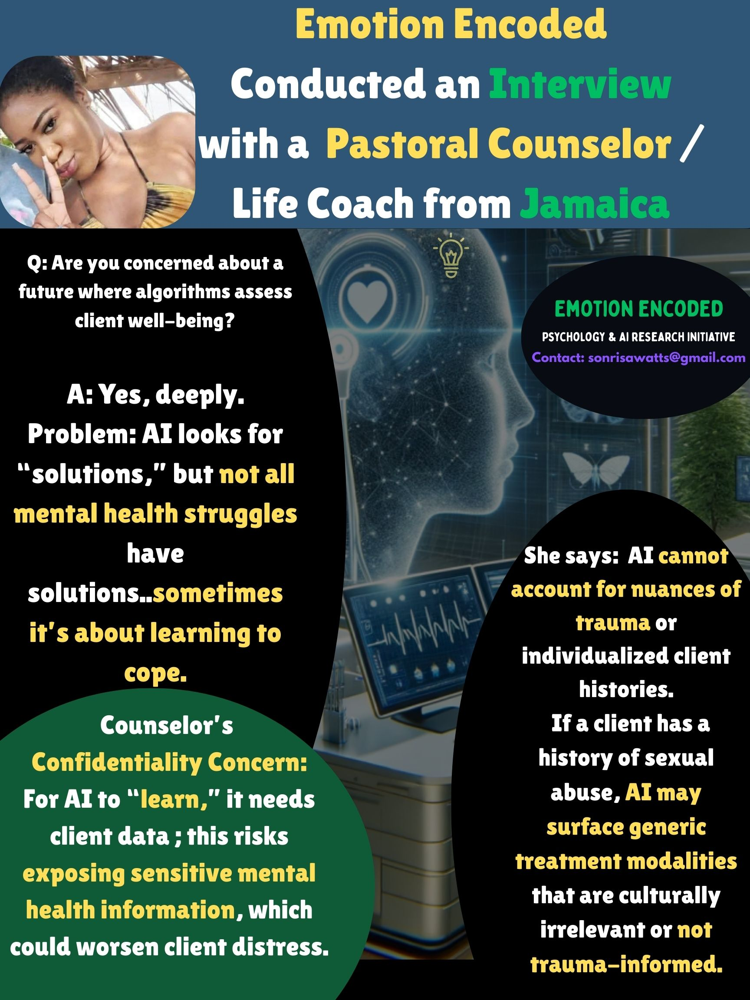
🤗St. Kitts & Nevis 🤗 Counselor's Perception on AI
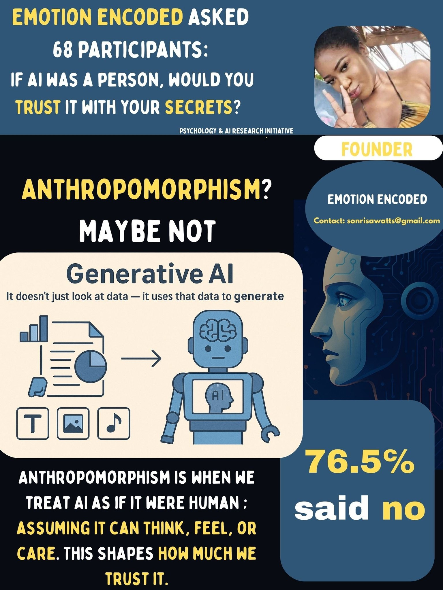
🤗St. Kitts & Nevis 🤗 If AI were a human...

Featuring Dr. Dwain Archibald, District Medical officer
Read More →
🤗St. Kitts & Nevis 🤗 Young Doctor's Perception on AI

Dr. Warren Grayson, Professor of Biomedical Engineering at Johns Hopkins, discusses how AI can augment creativity, predict healing, and the current challenges with datasets in tissue engineering.
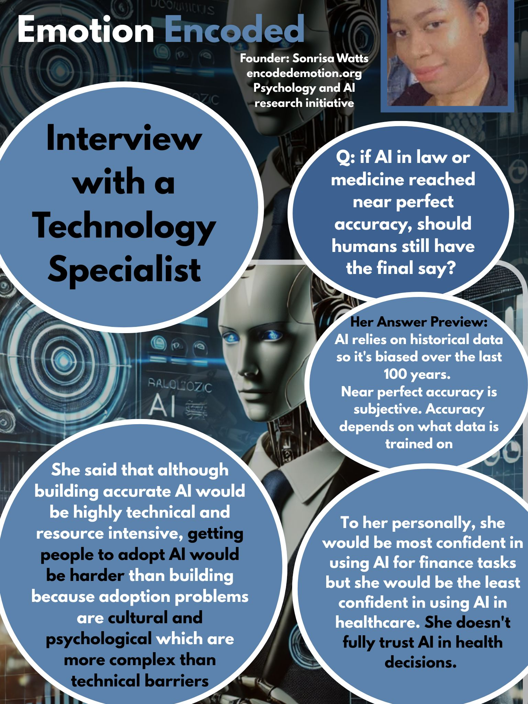
🧠Emotion Encoded’s Interview with A Tech Specialist from St.Kitts - Do we Trust AI with Our Money More Than Our Health?🧠

🧠Dr Bichara Sahely, Consultant Physician in Internal Medicine, generously shared his perspective on the promises and pitfalls of AI in medicine.
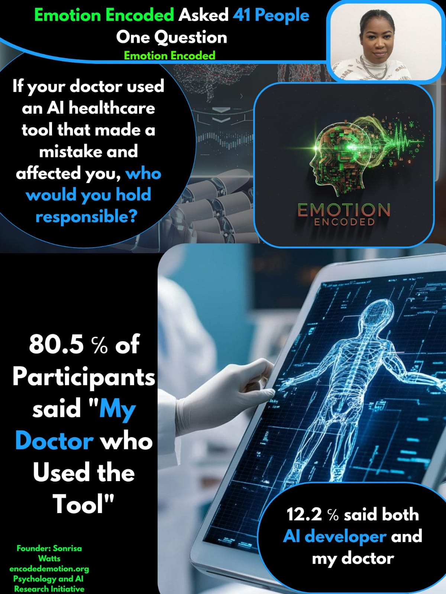
🧠 At Emotion Encoded, we recently asked participants a seemingly simple question: If your doctor used an AI healthcare tool that made a mistake and affected you, who would you hold responsible?
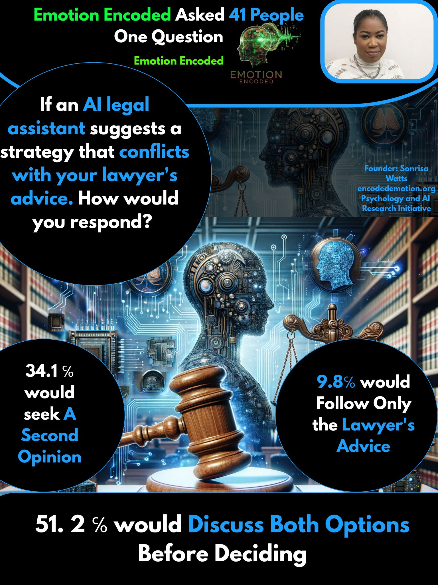
At Emotion Encoded, our research dives into the fascinating and often contradictory ways people interact with artificial intelligence. We recently posed a thought experiment: "If an AI legal assistant suggests a strategy that conflicts with your lawyer's advice, how would you respond?" The answers from our survey of 41 participants revealed a surprising truth about trust in the legal field.

In the fast-paced world of financial technology, a common narrative prevails: AI is the future, a perfect oracle of data-driven truth. Yet, a conversation with financial professional Alex Straun reveals a more complex, and cautionary, perspective. His insights move beyond the hype to expose a fundamental paradox.

Our survey reveals a struggle with trust as patients navigate a new landscape where AI recommendations may conflict with their doctor's advice.

This article explores the perspective of a young doctor on the promises and pitfalls of AI in medicine, discussing issues of trust, over-reliance, and its expanding role in healthcare.

Mr. Enoete Inanga, a technology professional with sharp insight into the promises and pitfalls of AI.

Lawyer Gumbs warns against the temptation to elevate AI into a position of authority within legal reasoning.
Read More →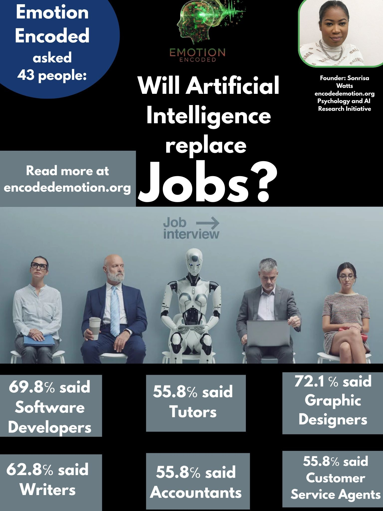